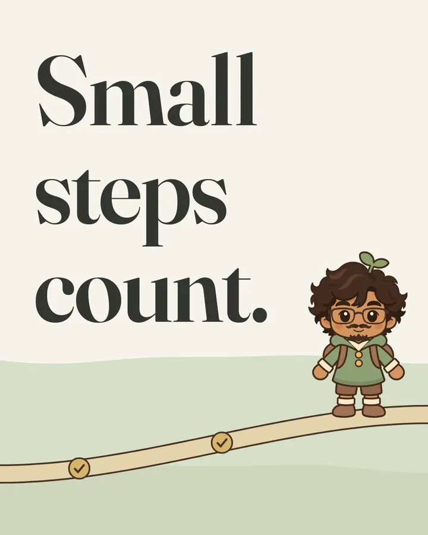
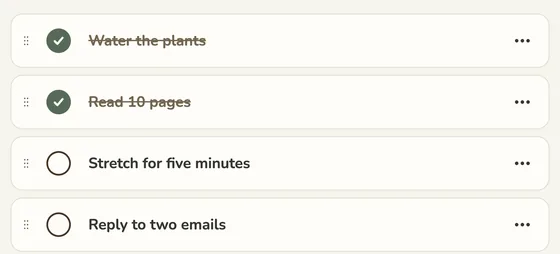
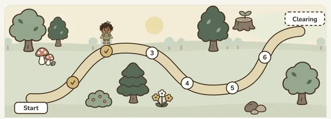
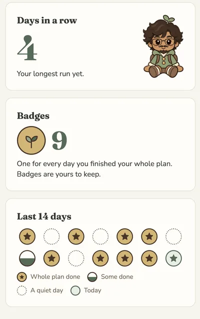

Little Steps
Small steps count.
A small companion for your Mac. Plan a few quests for the day, tick them off, and it walks a forest path, one step for each.
Apple Silicon Mac · macOS 13 Ventura or later

The companion waves on a forest path. A butterfly visits it. A click opens a small panel, and six quests are planned for the day. Two are ticked off and the companion walks along the Journey path to the clearing, where a badge lands. On the desktop it celebrates. History shows the days in a row go from three to four and the badges from eight to nine. In the evening it yawns.
A few small things a day
-
Plan a few small things.
Write down what you’d like to do today, up to eight quests. Small ones count.

-
Tick them off.
When one is done, tick it. That’s all there is to it.

-
Your companion walks a step on the path.
Each quest you finish is one step along the Journey. Finish them all and it reaches the clearing.

It keeps you company on your desktop
It stands on your desktop, outside any window. Drag it wherever you like. Click it and it waves.
-
Just being there Most of the time it stands, breathes and blinks. -
A butterfly visit Now and then a butterfly drops by. -
A little doze Step away for five minutes and it yawns, sits down and dozes off.
These clips come from the launch film, which replays the app’s own animation, frame by frame.
Small days add up
History keeps a gentle count of how it’s going.
-
Days in a row
A day counts when you finish at least one quest. Today never breaks your run while it’s still going.
-
Badges
One for every day you finish your whole plan. Badges are yours to keep.

Install and first open
It takes a couple of minutes, and you only allow it once.
-
Download
You need a Mac with Apple silicon (M1 or later) and macOS 13 Ventura or later. It does not run on Macs with an Intel processor. The download is about 119 MB.
-
Drag it to Applications
- Double-click the downloaded
.dmgfile. A window opens with the Little Steps icon and an Applications folder. - Drag the Little Steps icon onto the Applications folder.
- Eject the disk (the eject button next to “Little Steps” in the Finder sidebar). You can then delete the
.dmg.
Keep the app in Applications: launch at login only works from there.
- Double-click the downloaded
-
Open it the first time
- Double-click Little Steps in your Applications folder.
- macOS says it could not verify that Little Steps is free of malware, and does not open it. Click Done, not Move to Trash.
- Open Apple menu > System Settings > Privacy & Security and scroll down to Security. Next to the line saying Little Steps was blocked, click Open Anyway.
- Enter your Mac password or use Touch ID.
- macOS asks once more. Click Open Anyway.
You only do this once. After that, Little Steps opens like any other app. If there is no Open Anyway button, double-click Little Steps once more and go back to Privacy & Security: the button only shows for a while after a blocked open.
Prefer Terminal?
Instead of the steps above, run this, then open the app normally. It removes the “downloaded from the internet” mark, so macOS no longer asks. Only do this for apps you trust.
xattr -dr com.apple.quarantine "/Applications/Little Steps.app"
Why macOS asks first
Little Steps is not notarized. It isn’t signed with an Apple Developer ID or checked by Apple, so macOS blocks it the first time you open it, and you allow it once in System Settings. It doesn’t mean anything is wrong with the file.
Where to find it
Little Steps has no Dock icon. Look for a small sprout in the menu bar at the top right of your screen: it opens the main window and Settings, hides or shows the companion, and quits the app.
Uninstalling
- If you turned on launch at login, turn it off in Settings first.
- Quit Little Steps: sprout in the menu bar > Quit Little Steps.
- Drag Little Steps from Applications to the Trash.
-
To also remove your quests and history (this can’t be undone), in Finder choose Go > Go to Folder… and move these to the Trash:
- the folder
~/Library/Application Support/Little Steps - the file
~/Library/Preferences/io.github.prasanna-ks-85.littlesteps.plist
- the folder
Questions
- Is it free?
- Yes. Little Steps is a free download.
- Is there a Windows version?
- Not yet. For now Little Steps runs on Macs with Apple silicon. A Windows version is planned for later, and it will only be published once it has been tested on real Windows PCs.
- How do I update it?
- There are no automatic updates for now. Download the new version from this page, quit Little Steps, and drag the new app into Applications to replace the old one. Your quests and history are kept outside the app, so they stay. macOS may ask you to allow the new copy once, as in step 3 above.
- Where is my data?
-
On your Mac, in the folder
~/Library/Application Support/Little Steps, with a small settings file at~/Library/Preferences/io.github.prasanna-ks-85.littlesteps.plist. Uninstalling shows how to remove both.